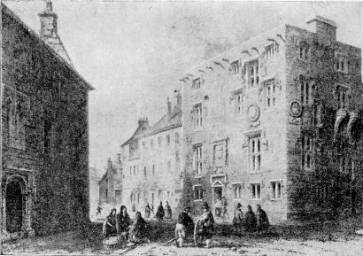

1820 static edition
James Hardiman's History of Galway
A cleaner, navigable GitHub Pages edition of Hardiman's out-of-copyright history of Galway, preserving the OCR text from the 1995 Wombat Research HTML markup.

Scanned/OCRed source. The text is preserved as received and has not been proofed against the printed book.
Contents
Read the book
Letter to James Daly, Esq.
Hardiman's dedication to James Daly of Dunsandle.
Front matterPreface
The author's statement of purpose and sources.
Part IChapter 1
The name Galway, the Tribes of Galway, and the old map.
NotesChapter 1 Footnotes
Footnotes associated with Chapter 1.
Part IChapter 2
From the earliest accounts to the invasion of Henry II.
NotesChapter 2 Footnotes
Footnotes associated with Chapter 2.
Part IChapter 3
From the Anglo-Norman invasion to 1484.
NotesChapter 3 Footnotes
Footnotes associated with Chapter 3.
Part IChapter 4
From 1484 to the commencement of the Irish Rebellion in 1641.
Part IChapter 5
From 1641 to the Restoration of Charles II in 1660.
Part IChapter 6
From 1660 to the surrender of Galway to Williamite forces in 1691.
Part IChapter 7
From 1691 to the present time of the 1820 edition.
Ecclesiastical historyPart III
The ecclesiastical history of Galway to Hardiman's present time.
Modern statePart IV
The modern state and description of the town.
ReferencePostscript Concerning the Engravings
Hardiman's note on the engraved plates.
ReferenceMap Scans
Compressed PBM scans of the four panels of the accompanying map.